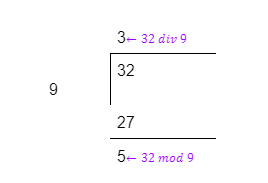

Ejercicio 2. Calcule la siguiente división: 32 ÷ 9 y el módulo: 32 (mod 9) a mano y con calculadora para observar la diferencia entre estas operaciones.
Ejercicio de: Epp, S. S. (2012). Matemáticas Discretas Con Aplicaciones (4ta ed.). Cengage Learning.
Objetivo: Resolver y analizar este ejercicio importante para comprender las diferencias entre la división estándar y la aritmética modular.
Cuando sea realice a mano la división se obtienen los siguientes resultados:

En donde se puede observar que el enfoque de cada una de las operaciones es diferente, en el sentido en que con la división normal el resultado que interesa es el cociente, mientras que en el módulo se presta atención al residuo.
Utilizando una calculadora para dividir 32 entre 9, se obtiene como resultado: 3.555555556. Descartando la parte fraccionaria: 32 ÷ 9 = 3.
Por otra parte, en cuanto al módulo:
32 mod 9 =
La atención se centra principalmente en el residuo de la operación, en este caso el resultado de:
32 mod 9 = 5.
Fin del ejercicio.
Siguiente
Regresar